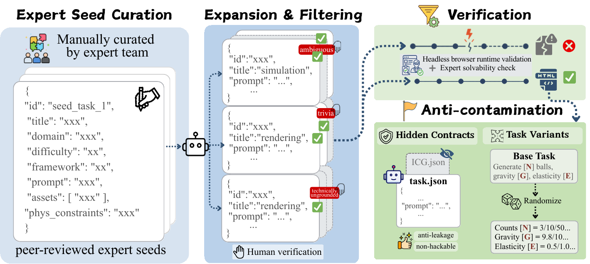

让模型生成一个会动的三维世界，难点并不在于“画出几个物体”。物体要加载，物理状态要演化，按钮和键盘要真正改变引擎状态，用户完成一串动作之后，世界还要保持一致。WorldCoder-Bench 把这些要求做成可执行的基准，并用 StateProbe 直接检查浏览器运行时，而不是只看截图。
本文解读 Shuo Lu、Yinuo Xu、Kecheng Yu 等人的 WorldCoder-Bench: Benchmarking Physically Grounded 3D World Synthesis（当前 arXiv v3，2026-11-06）。论文提出的是任务集和评测协议，不是新的 3D 生成模型；代码与数据入口见论文仓库和匿名发布页。
一、课题解读：怎样判断 Agent 真正建好了一个三维世界
浏览器里的 Three.js 世界同时包含几何、材质、动画、物理和交互。截图能告诉我们“看起来像不像”，DOM 能告诉我们是否有按钮和文本，却看不到 canvas 内部的坐标、速度、碰撞、选中模式和状态变量。一个小球可以被画在正确位置，但没有按重力运动；一个门可以显示“打开”，但玩家实际穿不过去。
因此，这个课题研究的不是单纯的图像生成，而是从自然语言生成可执行、可交互、可验证的世界。合格的产物至少要满足三层要求：场景与资产存在，用户操作能触发正确的状态转移，物理或逻辑约束在转移之后仍成立。评测也必须把浏览器中的隐藏状态变成可审计的证据。
二、相关文献解读：从网页代码评测走向运行时契约
| 方向 | 主要做法 | WorldCoder-Bench 补上的缺口 |
|---|---|---|
| Web/UI-to-code 基准 | 通过截图、DOM 或视觉裁判比较页面 | Three.js 的核心逻辑在 <canvas> 内，DOM 观察不足 |
| 交互式网页评测 | 让 Agent 点击、输入并观察结果 | 探索成本高、轨迹不确定，不能稳定检查隐藏物理量 |
| 3D 生成与游戏基准 | 关注外观、场景或局部交互 | 很少把物理正确性、资产加载和状态同步放进同一份契约 |
论文的关键转向是把“参考答案”从一份固定 HTML 改成行为契约：不同实现只要在规定动作后满足相同的状态约束，就都可以通过。这样既允许代码风格不同，又能把检查点隐藏起来，减少针对评测脚本的投机。
三、研究问题解读：我们要区分哪几种“看起来成功”
下面是我们的阅读归纳：
- 现有截图、DOM 和通用视觉裁判，能否可靠地判断一个三维世界是否真的工作？
- 如何构造规模足够大、但每道题都能进行确定性运行时检查的任务集？
- 模型生成的世界能否在改变重力、物体数量、初始状态或资产名称之后仍然成立？
- 正确性、成本和生成速度之间的关系是什么？
论文的回答是 StateProbe：在沙箱 Chromium 中加载模型输出，读取标准化运行时接口，按隐藏动作序列逐步探测，并对每个状态变化检查隐藏契约。
四、方法解读：从任务构造到 StateProbe

第一步：把生成目标规定成一个可运行的 HTML
每道题由 task.json 和可选的 assets/ 目录组成。模型只能看到自然语言说明、需要暴露的状态接口和资源，必须输出一个自包含的 Three.js HTML。它不能看到动作序列、阈值、断言脚本或隐藏契约。数据集有 2,026 道专家策划任务，覆盖三类意图和 15 个细粒度领域：
| 宏类别 | 用户意图 | 典型检查 | 任务数 |
|---|---|---|---|
| Simulation | 观察系统演化 | 物理、化学、软体和守恒行为 | 649 |
| Rendering | 控制视觉呈现 | 材质、着色器、后处理和程序化效果 | 620 |
| Application | 完成交互目标 | 游戏、动画、产品、建筑和可视化流程 | 757 |
第二步：四阶段构造并隐藏评测逻辑
五位 3D 图形与交互系统博士先用两个月手工制作种子题；随后用 LLM 扩展出超过 10,000 个候选，人工删掉含糊、琐碎或无法确定性评测的题；通过无头浏览器检查资产、加载和接口稳定性；最后由专家写出 affordance、可达状态、动作转移和数值不变量的契约。
最终发布四个用途不同的切分：Core 205 道困难主榜题，Extended 1,621 道更广泛的隐藏题，Robust 615 个由 Core 每题生成三个扰动变体，以及 Dev 200 道公开契约题。Robust 改变重力、弹性、质量、对象数量、初始状态、提示措辞或 .glb 文件名；契约也随变体改写。它能测试对规格变化的敏感性，但论文也明确说，这种扰动本身不能单独证明模型没有记忆模板。
第三步：用 mutation testing 先检查“检查器是否严格”
专家从参考实现写契约，然后故意注入删除状态更新、缩放物理常数、加载错误资源、交换事件目标或 HUD 不同步等缺陷。只有能拒绝这些缺陷的契约才被保留，否则就修改或放弃任务。这一步不是证明检查器覆盖所有可能的错误，而是降低“宽松阈值也能过”的风险。

第四步：在浏览器中执行动作、记录前后状态
模型需要暴露类似 window.__3D_STATE__ 的接口，报告坐标、速度、模式、计数器、相机距离和交互标志。StateProbe 运行固定版本的 Three.js 和 Playwright/Chromium，先检查页面是否加载、是否有 WebGL 上下文、是否持续渲染以及是否出现早期异常；失败记为 Runtime_Crash。
对可运行程序，评测器依次执行点击、按键、拖拽或物理步进命令。每个动作前后各取一次快照，验证状态差分和隐藏后置条件，最后把任务标为 Runtime_Crash、Check_Fail 或 Check_Pass。这是一条可复现、可回放的探测轨迹，而不是一次主观“看起来不错”的判断。
第五步：从四类覆盖率到质量调整后的效用
- A-Cov（Affordance Coverage）：对象、控件和可交互能力是否出现。
- S-Cov（State Coverage）：规定的中间状态是否可到达。
- T-Cov（Transition Coverage）：动作后的状态转移是否满足后置条件。
- V-Cov（Verification Coverage）：按契约层级加权的主榜分数。
V-Cov 是主指标，前三者用于定位“有东西但不动”“能到中间态但转移失败”等问题。论文还定义质量调整后的 Return on Automation（RoA）和 Time Efficiency Multiplier（TEM）：用 V-Cov 折扣估计的人类工时，再除以模型费用或生成时间。作者用约 60 美元/小时的开发者工资假设和困难等级工时估计，因此这两个数是效用代理，不是已经实测的替代人工成本。
五、实验设计与结果：先看整体有效性，再看失败在哪里
主实验：九个模型在 205 道 Core 上的整体表现
九个模型都以 zero-shot 方式接收同一 task.json 和资产目录，输出单个 HTML。Core 有 205 道高难度题，最终主榜结果如下（百分比越高越好）：
| 模型 | V-Cov | Simulation | Rendering | Application | A-Cov | S-Cov | T-Cov |
|---|---|---|---|---|---|---|---|
| GPT-5.4 | 27.8 | 26.8 | 37.8 | 23.5 | 66.2 | 46.1 | 26.3 |
| Gemini 3.1 Pro | 26.5 | 27.0 | 35.9 | 21.4 | 67.4 | 45.9 | 25.1 |
| Qwen 3.6-Plus | 25.3 | 24.6 | 30.4 | 23.2 | 65.3 | 43.6 | 23.7 |
| MiniMax M2.7 | 23.0 | 22.6 | 30.2 | 19.7 | 57.6 | 39.9 | 21.7 |
| DeepSeek V3.2 | 21.9 | 21.3 | 28.8 | 18.8 | 60.5 | 37.4 | 20.7 |
| Claude Sonnet 4.6 | 18.7 | 21.4 | 25.1 | 13.7 | 56.5 | 33.4 | 17.0 |
| Kimi K2.5 | 18.2 | 13.6 | 29.3 | 15.8 | 50.9 | 34.4 | 17.1 |
| Claude Opus 4.6 | 17.5 | 18.2 | 22.2 | 14.6 | 58.6 | 38.3 | 15.8 |
| DeepSeek V4-Flash | 16.5 | 11.8 | 24.2 | 15.8 | 40.6 | 30.7 | 15.9 |
主实验最重要的结论不是“谁第一”，而是没有模型超过 30% V-Cov。A-Cov 为 40.6–67.4%，S-Cov 为 30.7–46.1%，T-Cov 只有 15.8–26.3%：模型更容易放置对象和控件，较难让动作真的驱动正确的状态链。Rendering（22.2–37.8%）整体高于 Simulation（11.8–27.0%）和 Application（13.7–23.5%），符合材质/着色器 API 比数值物理和多步同步更规整的直觉。
对照实验：外部观察与隐藏契约并不等价
作者在 1,434 个模型—任务对上比较三种替代评测：DOM-only 的 Kendall τb 为 -0.021，截图加 VLM 为 -0.068，八步纯 Agent 探索为 +0.111；但后者仍把 45.6% 的低 V-Cov（低于 30%）输出判为通过。相对 DOM 的成本约为 1×、50×、400×。这说明“看到了按钮”“画面相似”或“探查了几步”都不能替代契约级状态验证。
Robust：规格一变，分数进一步下降
在 615 个扰动变体上，GPT-5.4 和 Gemini 分别为 19.9% 和 19.1% V-Cov；Qwen 从 Core 的 25.3% 降到 13.5%。这支持 Robust 作为压力测试的价值，但不能把下降单独解释为“记忆被打破”，因为不同题目的扰动类型并不完全相同。
效用和错误分析：便宜不等于正确，接口漂移是主因

在作者的假设下，DeepSeek V4-Flash 的 RoA 最高（19,150 美元/美元），GPT-5.4 的 TEM 最高（68.87 倍）。这只是把低成本或低延迟与 V-Cov 相乘后的估计：如果输出行为错误，效用会被折扣；并且人类工时来自七位实践者估计，未测量真实修复、评测和基础设施成本。
作者分析了 596 条 T-Cov 为零的记录。主要诊断分布中，状态模式漂移 42.8%、交互链断裂 40.8%，两者合计 83.6%；物理违反为 0.4%，语义误解为 2.7%。这些百分比来自零 T-Cov 诊断子集，标签可重叠，不能当成全体失败率。补全 Kimi 缺失的状态接口只让 V-Cov 从 18.2% 升到 20.1%，Opus 从 17.5% 升到 18.9%，说明“补上接口”仍不等于行为链已经正确。
六、我们自己的思考
课题思考：这个领域在研究什么
WorldCoder-Bench 把研究对象从“生成一张像样的三维画面”推进到“交付一段能被操作、能被验证的程序”。它最有价值的抽象是把正确性写成动作前后的状态契约：实现细节可以不同，但行为证据必须一致。对科研智能体评测而言，这也是从结果截图走向可审计执行轨迹的一步。
局限问题思考：目前还存在哪些问题
第一，__3D_STATE__ 是模型必须实现的可观测接口，接口本身的缺失或漂移可能遮蔽真实画面质量；评测因此更像“遵守可观测性协议并实现行为”的联合测试。第二，205 道 Core 是按难度筛出的诊断集，不能直接代表所有浏览器 3D 请求。第三，RoA/TEM 依赖公开价格、七位专家工时和一次生成延迟，不包括修复循环，也不等同于生产替代率。第四，Robust 的扰动测试了规格变化，却仍无法单独分离模板记忆、预训练知识和机制理解。

解决方案思考：这些问题有哪些解决方向
可以把评测拆成两条并行证据链：一条验证引擎状态和动作契约，另一条用多视角渲染、几何检查和资产语义验证外观，避免可观测性接口替代全部质量。对完整应用，应额外报告端到端路线成功率、状态保持率、碰撞失败率和恢复能力，而不是只给覆盖率平均数。对泛化，应把未见物理机制、未见资产组合和新交互拓扑做成正交测试，并报告每种扰动的分层结果。最后，成本实验应记录所有尝试、重试、工具调用、评测和人工修复时间，形成从“首稿”到“可交付”的真实成本曲线。
一句话总结： WorldCoder-Bench 的核心不是让评测器“看得更清楚”，而是让评测器进入世界的运行时，直接问每个动作之后状态是否真的发生了应有的变化；结果显示，当前模型距离稳定交付可验证的交互三维世界仍然很远。